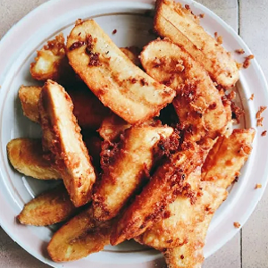

Ingredients
- 4 Bananas
- 2 Tomatoes
- 4 plant-based sausages
- 2 Tsp Margarine
- Pinch of black pepper
Instructions
- Slice bananas length wise, cut tomato in half, cut plant-based sausages in half.
- Add 2 tsp of margarine into a frying pan on medium heat.
- Fry bananas 3 minutes on one side then turn and fry 3 minutes on the other.
- Bananas should still feel firm. Set on the plate.
- Using the liquid left over fry sausages and tomatoes cut side down and for 3 minutes then turn and
cook for another 3 minutes on the other side.
- Adding a pinch of black pepper to the tomato when it’s turned over.
- Tomatoes should be soft all the way through and the sausages crispy. Serve.